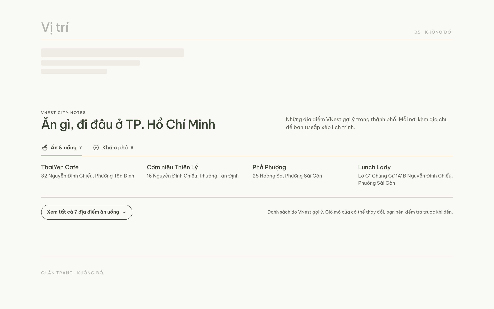
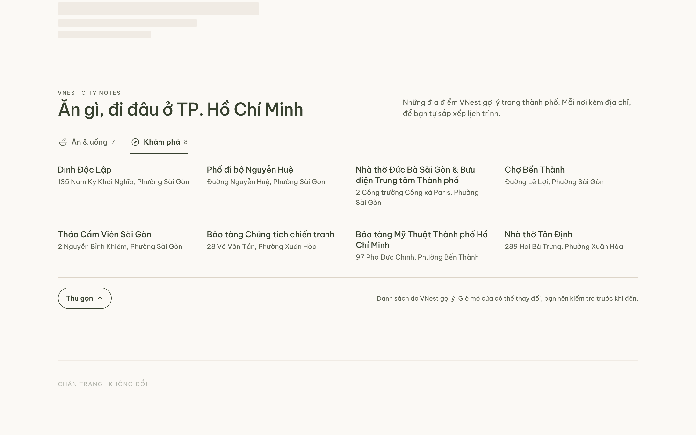
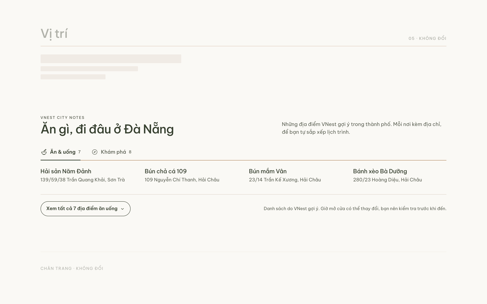
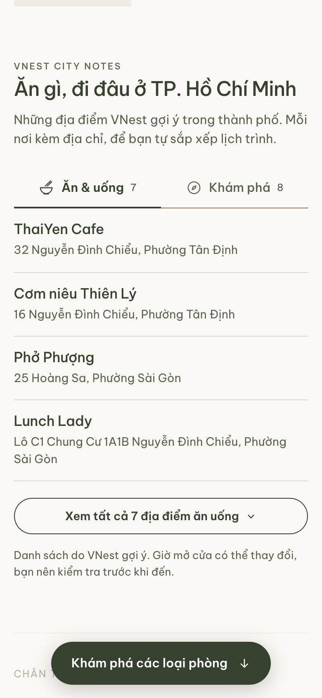

VNest V2 · City Notes · 20/10/2026 · đề xuất, chưa duyệt
One responsive module for every property page, built from the destination sheet of VNest_Informationv2.xlsx: 30 places, two cities, names and addresses exactly as VNest wrote them. No distances, hours, ratings, photographs or map links, because the sheet has none. Unchanged sections are drawn as ghosts. Specification and decisions: docs/sections/city-notes-spec.md. Try the interaction: frames/city-notes.html (add ?city=da-nang).




| # | Decision | Proposed |
|---|---|---|
| CS-1 | Heading | "Ăn gì, đi đâu ở [city]" under the label "VNest City Notes". "Khám phá quanh nơi bạn ở" would say the places are around the guest's property, which the sheet does not support. |
| CS-2 | Placement | Section 6, after Vị trí. |
| CS-3 | First view | Four per category, the workbook's order, Ăn & uống selected; not numbered, so not a ranking (Q36 asks VNest to choose). |
| CS-4 | Expanded | Inline, same panel, stays expanded across tabs; "Thu gọn" to collapse. |
| CS-5 | Copy address | Not now; a possible Grab-friendly addition later. |
| CS-6 | Imagery | None. Two meaningful icons only: bowl and chopsticks, compass. |
| CS-7 | Next | Reader with tests and an isolated /dev/city-notes prototype; Bare Chic integration later, as its own step. |
Location lines: the city is dropped (the heading names it), spaces are tidied, nothing is respelt. Two addresses with open defects show only their area: Tan coffee "Bình Hiên, Hải Châu" (D33 "!0"), Chợ Hàn "Hải Châu" (D30 "Trần phú"), until VNest answers Q32.